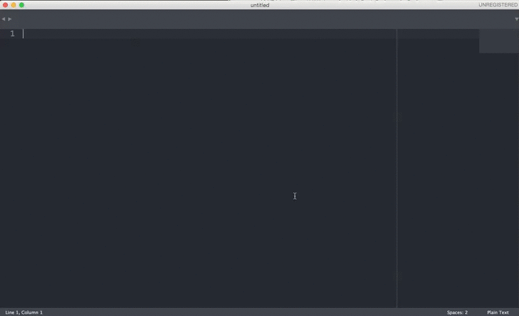
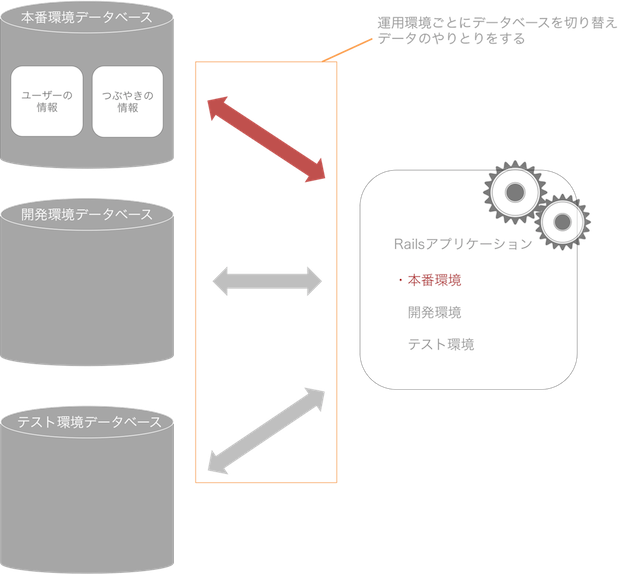
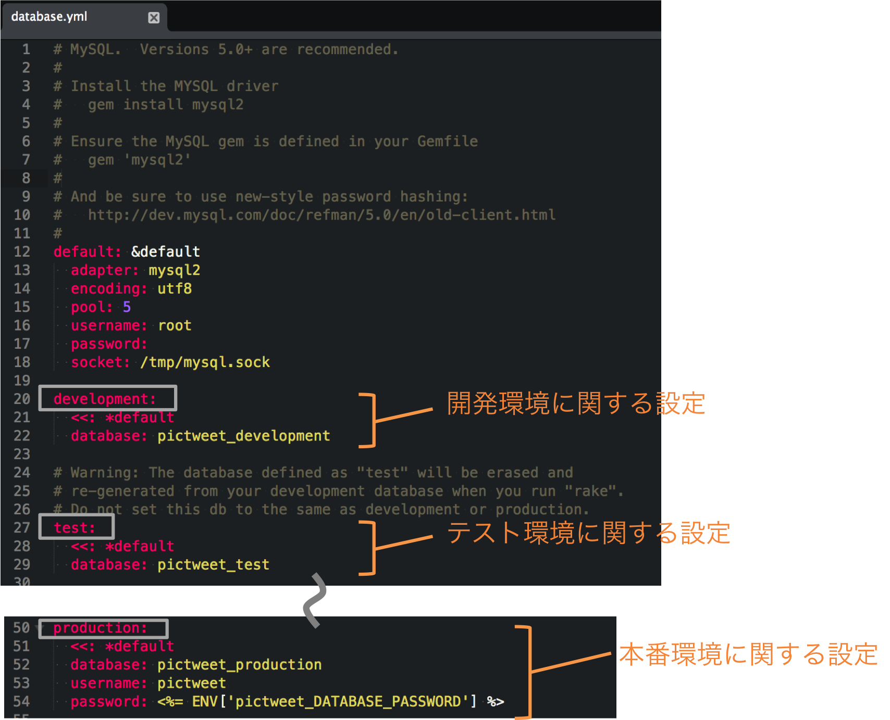
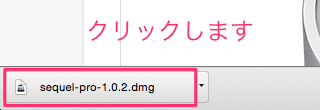
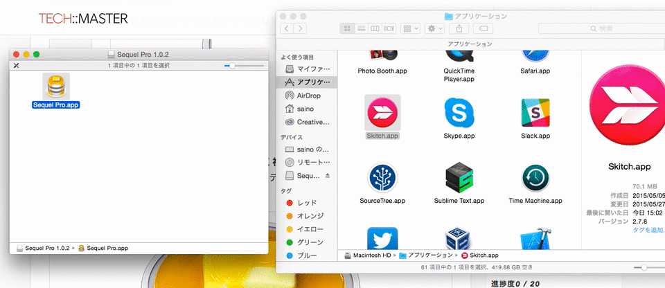
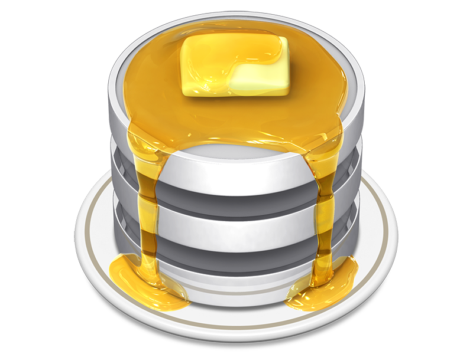
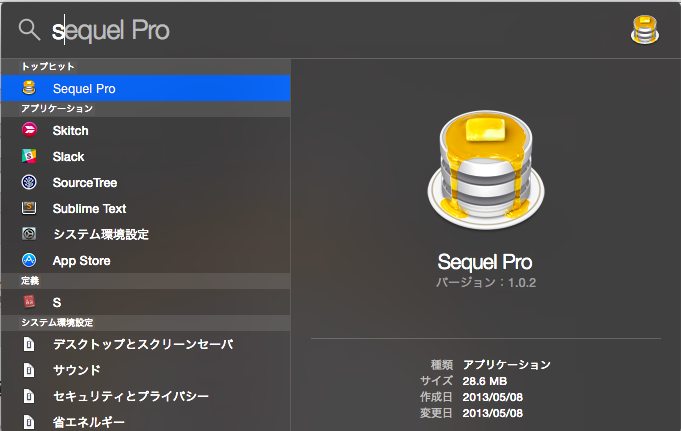
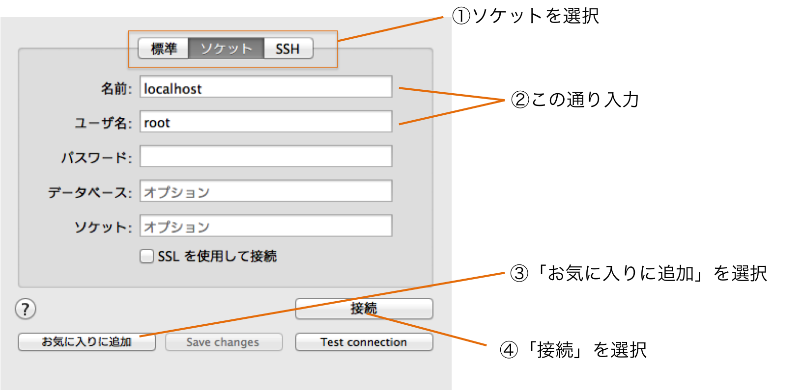
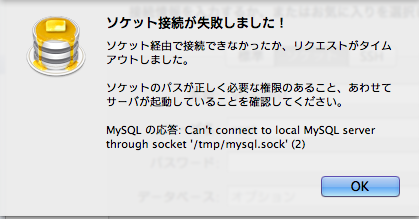
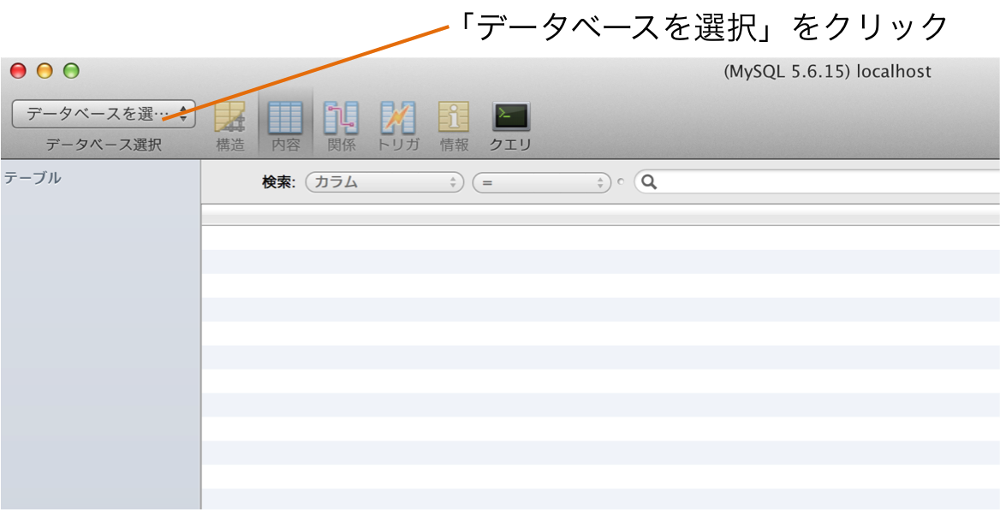

Rails開発ではデータベース(MySQL)やRails自体のインストールなど、まずは開発のできる環境を整える必要があります。
必要な手順は主に以下です。
これらの手順を終えていない方は、以下のリンクから資料を参照し、環境構築を行なってください。
すでに環境構築を終えられている方は、このまま本カリキュラムを進めてください。
vagrant フォルダの中に作成してください新規Railsアプリケーションを作成し、開発を行なうための準備を行いましょう
・linuxコマンド
・Gem
・データベース
この章から本格的にRailsアプリケーション開発をはじめていきます。プログラミングでは当然のことながら開発中にエラーが発生することがあります。Railsでも同様です。
エラーが発生した場合にはTECH::MASTERカリキュラムのトラブルシューティング(Rails編)を見ると、解決方法が見つかる可能性があります。
トラブルシューティング(Rails編)を参考にしてよくあるエラーは自力ですぐに解決できるようになりましょう。エラー解決が素早くなればなるほど、効率的にプログラミングを行うことが出来ます。
Railsアプリケーションを開発する際には、コマンドを使ってアプリケーションのひな形を作成する必要があります。このセクションでは新規アプリケーションを作成し、開発への準備を整えます。
通常、アプリケーションを配置するディレクトリはどんな場所に作成しても構わないのですが、今回の開発では指定した場所にディレクトリを作成します。特定のディレクトリの下にアプリケーションを配置していくことで、アプリケーションが複数になった場合でも場所の管理がしやすくなります。
ターミナルはパソコンの中身の部分を操作できるシステムです。linuxコマンドとはターミナル内で使用出来るコマンドのことを指します。新しくディレクトリを作成する時などに使用します。たくさんの種類があるので、全て覚えるのではなく必要に応じて使用しましょう。
| コマンド | 意味 | 役割 |
|---|---|---|
| cd | change directory | 現在のディレクトリ（カレントディレクトリ）を移動する |
| mkdir | make directory | 新しくディレクトリを作成する |
| pwd | print working directory | 現在のディレクトリ（カレントディレクトリ）のパスを表示する |
これからテキストを読み進めていく中でターミナルでコマンドを実行するという作業があります。このときに注意して欲しいことが３点あります。
＄マークはターミナルで実行するコマンドであることを示す記号です。そのため、実際にコマンドを実行する際には＄マーク以下の部分をコマンドとして実行しましょう。
＃マークはコメントアウトとよばれ、プログラムには関係の無い文字列などをコードの中に書き込むときに使用するものです。＃マーク以下には説明などを書き込むため、コマンドとして実行するときには打ち込まないようにしましょう。
コマンドを実行する際に、複数のコマンドを実行することがあります。その際には必ず一行ずつ実行するようにしましょう。
1 2 3 4 5 6 7 8 9 10 11 |
$ cd ~
# ホームディレクトリに移動
$ mkdir projects
#「projects」というディレクトリを作成
$ cd projects
#「projects」ディレクトリに移動
$ pwd
# 現在のディレクトリのパスを表示
|
Railsで新規アプリケーションを作成するためにはrails newコマンドを使用します。このコマンドを実行すると、Railsアプリケーションのひな形のようなものが作成されます。
このコマンドはRailsで新規アプリケーションを作成する際に使用します。コマンドを実行する際には作成したいアプリケーション名を最後につけて「rails new アプリケーション名」とコマンドを実行します。また、オプションを付ける場合には「- オプション名」と追記することで様々なオプションをつけることが出来ます。
1 2 3 4 5 |
$ rails new アプリケーション名
# アプリケーションを新規作成
$ rails new アプリケーション名 -オプション名
# オプションを付けてアプリケーションを作成
|
rails new コマンドを実行するとアプリケーション名のディレクトリが作成されます。
これらの作成されたディレクトリ以下のファイル全てをrailsアプリケーションといいます。つまり、これから開発を行なっていく際にはこれらのファイルを編集していくことになります。
mysqlとは、データを保存するデータベースの一種です。Railsではmysqlの他に「SQLite」などのデータベースも使用することができますが、本テキストではmysqlを利用します。
今回のRailsアプリケーションではmysqlデータベースを使用します。そのため、rails newコマンドに「-d mysql」というオプションを付けて新規railsアプリケーションを作成します。このオプションによって「mysql」というデータベースに最適化された
設定でアプリケーションが生成されます。
1 2 3 4 5 6 7 8 9 10 |
$ cd ~/projects
# projectsディレクトリに移動
$ rails new pictweet -d mysql
# 「pictweet」を「mysql」オプションで作成
$ cd pictweet
# 「pictweet」ディレクトリに移動
$ pwd
# 現在のディレクトリのパスを表示
|
Railsで新規アプリケーションを作成すると、アプリケーション名のディレクトリ以下にファイルが作成されます。Railsの開発ではこれらの複数のファイルを編集するので、ファイルごとに編集を行なうのは非常に大変です。そこで、SublimeTextを使ってディレクトリごとファイルを開いて開発を行ないます。
ディレクトリを開くにはSublimeTextを起動した状態で、「Command + o」というコマンドを実行します。コマンドを実行するとFinderが出てくるので、「pictweet」ディレクトリを選択しましょう。

正しくディレクトリを開けると上記のようなディレクトリ構造がSublimeTextの左側に表示されるようになります。左側の部分でそれぞれ、ファイルを選択することで、編集を行なうことが出来ます。
RailsはGemと呼ばれる便利なrubyライブラリをインストールして利用することで、より簡単にアプリケーション開発をすることができます。gemには開発を効率化してくれたり、会員登録サービスが簡単にできるなど便利なものがたくさんあります。Railsアプリケーションは全てをゼロから作るのではなくgemのライブラリも利用することでより効率的に開発することができます。
RailsでGemを追加するには「Gemfile」というファイルに「gem ‘Gem名’」と追記し、「bundle install」コマンドを実行する必要があります。「bundle install」コマンドは「bundler」と呼ばれるシステムを利用してGemをインストールするためのコマンドです。Gemfileに追記したGemは「bundle install」コマンドを実行することによってインストールされるので、Gemfileを編集した際には必ずこのコマンドを実行しましょう。
1 2 |
gem 'Gem名'
# Gemの追加
|
1 2 |
$ bundle install
# Gemをインストール
|
1 2 3 4 5 6 7 8 9 10 11 12 13 14 15 16 17 18 19 20 21 |
source 'https://rubygems.org'
...
（中略）
...
gem 'mysql2', '0.3.18'
# Use SCSS for stylesheets
gem 'sass-rails', '~> 4.0.2'
...
（中略）
...
# Spring speeds up development by keeping your application running in the background. Read more: https://github.com/rails/spring
gem 'spring'
end
gem 'pry-rails'
gem 'compass-rails','~> 2.0'
gem 'sprockets', '2.11.0'
|
初めからインストールされているGemに加えて3つのGemを追加しました。また、「mysql2」「sprockets」というGemに対してはバージョン指定を行ないました。そのため、Gemのバージョン指定を管理している「Gemfile.lock」というファイルを削除してから「bundle install」を行なう必要があります。
1 2 3 4 5 |
$ pwd
# 現在のディレクトリが「/Users/ユーザー名/projects/pictweet」であることを確認
$ bundle install
# Gemfileの内容に従ってGemをインストール
|
Railsではアプリケーション内でデータベースを利用することが出来ます。データベースを利用するためには、新規アプリケーションの作成とは別にデータベースの作成を行なう必要があります。
データベースとはたくさんの情報(データ)が入っている箱のようなものです。この中には様々な種類のデータが存在していて、データを格納したり、取り出すことが出来ます。Railsでは運用環境ごとにひとつのデータベースを持っています。

開発を行なう際に、運用環境と呼ばれるものを使い分けることで効率的に作業を行なうことができます。運用環境には３つの種類があり、以下のような使い分けをします。
| 運用環境 | 概要 |
|---|---|
| development | 開発環境。通常、開発をする際に使用する環境。 |
| production | 本番環境。アプリケーションを実際にリリースする際に使用する環境。 |
| test | テスト環境。アプリケーションの動作をテストする際に使用する環境。 |
Railsでは運用環境ごとにひとつのデータベースを持っています。ローカルでの開発では基本的にdevelopment環境と呼ばれる開発用の環境しか使用しません。そのため、利用するデータベースも開発環境用のみとなります。
新しくデータベースを作成するには「rake db:create」というコマンドを実行します。このコマンドはdatabase.ymlというファイルの内容に基づいてデータベースを新規作成するという機能を持っています。
database.ymlにはデータベースの設定を記述します。Railsは開発環境ごとにデータベースを持つので、開発環境の分だけデータベースの設定が記述してあります。

1 2 |
$ rake db:create
# データベースの作成
|
rake db:createをした後は何も起こっていないように見えますが、データベースはしっかりと作成されています。
上記の作業によってデータベースが作成されたはずです。今からSequel Pro(シークエル・プロ)というアプリケーションを使って、データベースが正しく作成できているかを確認します。
画面下方に表示されるdmgファイルをクリックします。

sequel Proをアプリケーションフォルダにドラッグ＆ドロップします

Sequel Proはデータベースの中身をわかりやすく視覚化して表示するアプリケーションです。このアプリケーションを使用することで、データベースをより簡単に管理することができます。

「control + space」でSpotlight検索を起動します。「sequel」と入力するとsequel Proを選択できるので、「enterキー」でsequel Proを起動します。


"接続"を押して下図のようなエラーが起きた場合

1 2 3 4 5 6 |
$ cd ~
# ホームディレクトリに移動
$ mysql.server start
starting MySQL
.. SUCCESS!
|
この操作でMySQLを起動してください

お疲れ様でした！このカリキュラムの終わりに確認問題を解きましょう。
 大宅 誠人
大宅 誠人